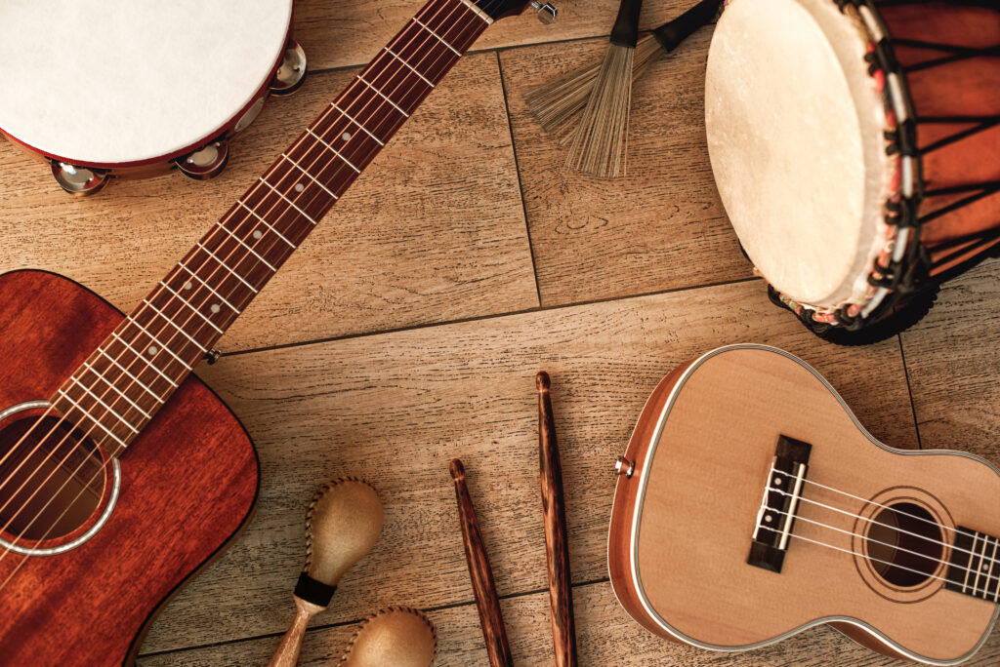
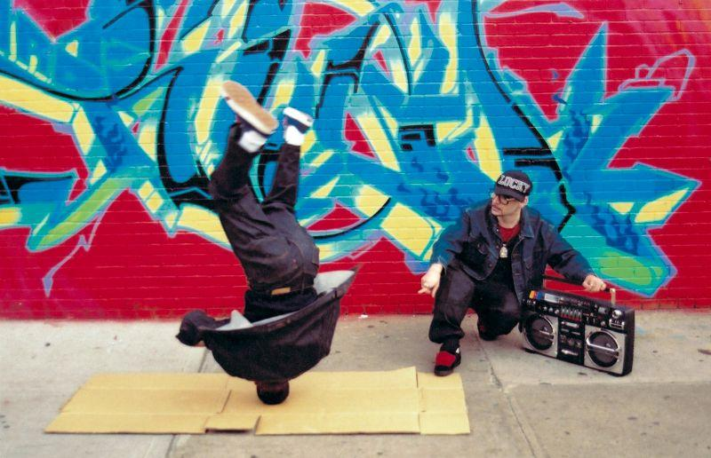
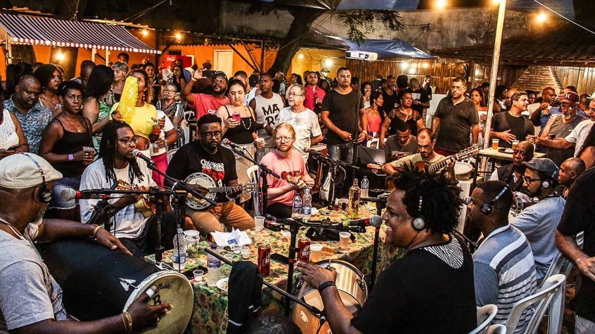

01 — ENERGIA
Rock
Nascido nos Estados Unidos na década de 1950, o rock mistura guitarras elétricas, bateria e atitude. Tornou-se um símbolo de expressão e rebeldia.
Elvis Presley · The Beatles · QueenCada gênero musical possui uma identidade própria. Alguns transmitem energia, outros despertam tranquilidade, mas todos carregam histórias e culturas que merecem ser conhecidas.
Conheça os gêneros ↓
Da guitarra elétrica aos instrumentos acústicos, cada estilo tem algo único para oferecer.
Nascido nos Estados Unidos na década de 1950, o rock mistura guitarras elétricas, bateria e atitude. Tornou-se um símbolo de expressão e rebeldia.
Elvis Presley · The Beatles · QueenCom melodias marcantes e refrões envolventes, o pop conquistou diferentes gerações e se tornou um dos estilos mais populares do mundo.
Michael Jackson · Madonna · Taylor SwiftSurgido em Nova Orleans, o jazz é conhecido pela improvisação e liberdade musical, com destaque para instrumentos de sopro e piano.
Louis Armstrong · Miles Davis · Ella Fitzgerald
Muito além da música, o hip-hop é um movimento cultural que reúne rap, dança, arte urbana e expressão social.
Tupac · Eminem · Racionais MC'sUtilizando sintetizadores, computadores e equipamentos digitais, a música eletrônica transforma sons em experiências dançantes.
Daft Punk · David Guetta · Calvin HarrisO indie está associado à independência artística e à experimentação. Reúne sonoridades variadas e valoriza a liberdade criativa dos músicos.
Arctic Monkeys · The Strokes · Tame Impala
A música brasileira é marcada pela diversidade cultural. Influenciada principalmente pelas tradições indígenas, africanas e europeias, ela deu origem a estilos únicos que representam a identidade do nosso país.
Um dos maiores símbolos da cultura brasileira, marcado pela percussão e pelas rodas de samba.
Reúne diferentes influências musicais e aborda temas sociais, culturais e cotidianos.
A música não possui fronteiras. Conhecer novos gêneros é descobrir culturas, histórias e maneiras diferentes de enxergar o mundo.
Continue explorando: a música e os sentimentos →